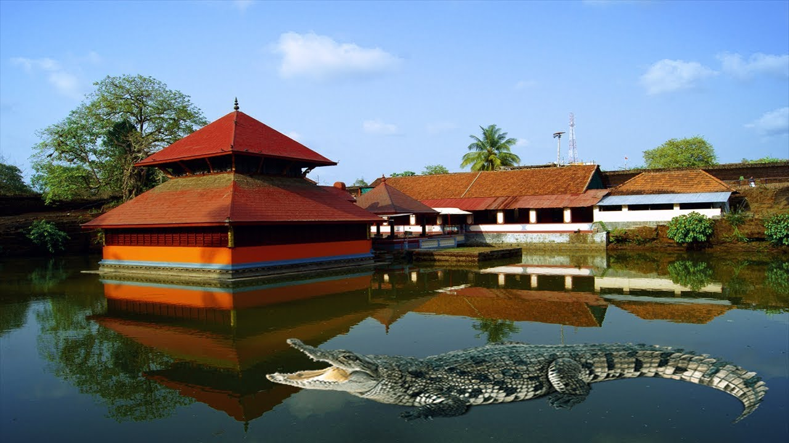

Bekal fortThe 300 years old defensive mechanism which is the largest and well-preserved fort makes it one of the best Kasaragod tourist place. You can get an enthralling view of the mesmerizing Arabian sea from the fort’s observation tower which was once used to fire the cannons! The impressive strength of the fort brings a herd of tourists to witness the glorious past and be awestruck. Visit an old mosque near this fort to dive deeper into history Location: A Half hour away south of Kasaragod at a distance of 16 kilometers, and exact address is Kasaragod Road, PO Bekal Fort, Beside Bekal Fort Railway Station Dist, Bekal, Kerala 671316 Timings: 8:00 am to 5:00 pm |
 |
Ananthapura lake templeCarved with mythological tales of Puranas and a hidden cave leading to a pond, this temple is well preserved for astonishing reactions all for its magnificent architecture. God’s own country has abundant homes of the lord. However, this particular locale is amongst the most visited places in Kasaragod. Residing in the middle of a lake, it makes the tourists curious enough to come and pay a visit. As stated, this locale is a host to a crocodile named Babiya which won’t be trouble as it got no interest in human flesh and is believed to be a protector of the temple. Though it is advisable not to pet it, just in case! |
 |